Steward
分享是一種喜悅、更是一種幸福
掌機 - TRIMUI - 更換SPI Flash
原廠IC
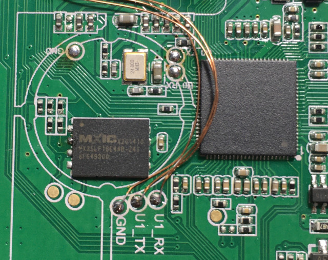
但是，司徒目前手上並沒有這麼大的SPI Flash，於是勇敢的料雞出現
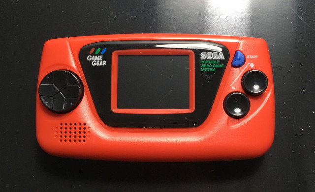
目標鎖定...
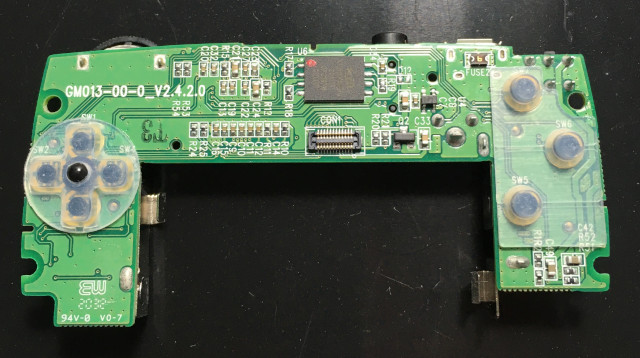
就是這顆SPI Flash
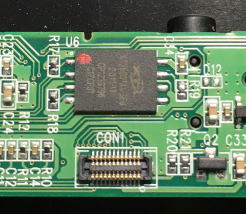
但是，悲劇再度發生，竟然無法提起
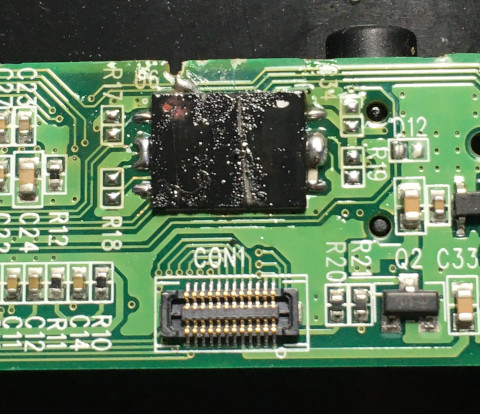
於是司徒只好使用目前既有的材料W25Q128
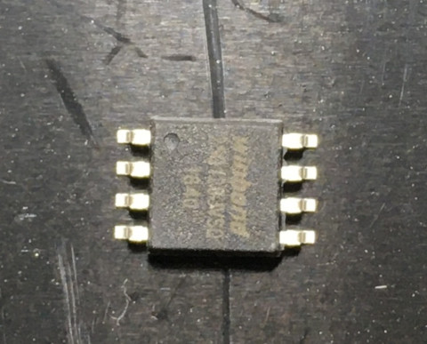
解焊
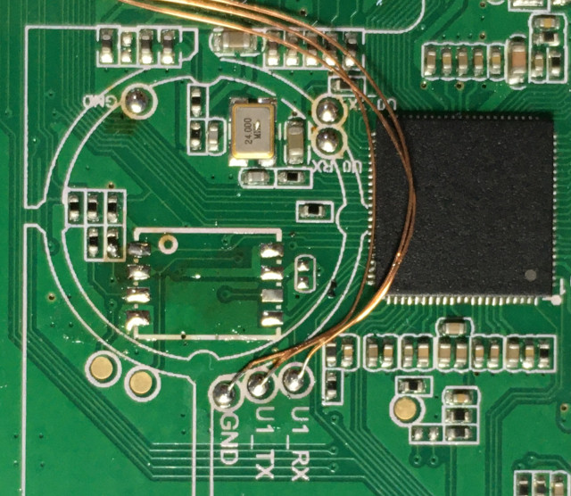
完成
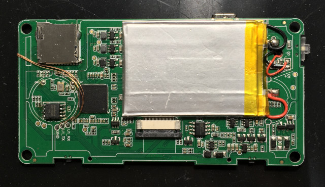
雖然司徒已經購買原本的NAND Flash元件，但是，目前尚未到貨，而司徒無意間發現了芒果派
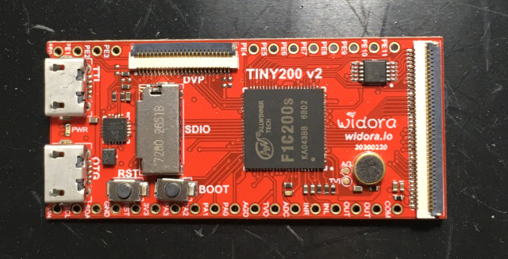
勇敢的料雞再度站了出來
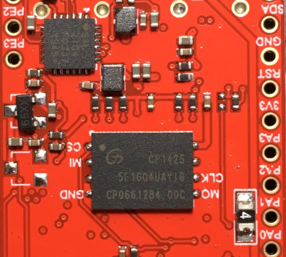
完成
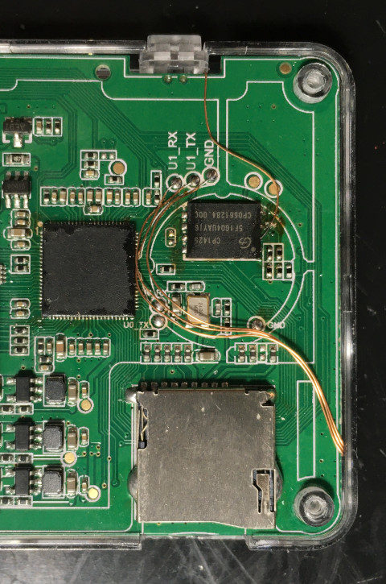
接著司徒便開始使用trimui_spiflash-write指令燒寫，這才發現，sunxi-fel的trimui_spiflash-write指令是無法用來燒錄NAND Flash，而嘗試過PhoenixSuit、dfu-util還是無法成功燒錄
司徒後來終於可以透過PhoenixSuit燒錄官方程式，原因就是NAND Flash型號需要跟原廠一樣是MX35LF1GE4AB-241
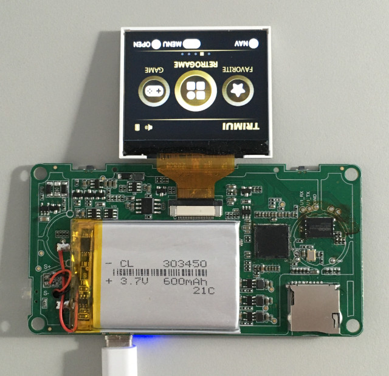